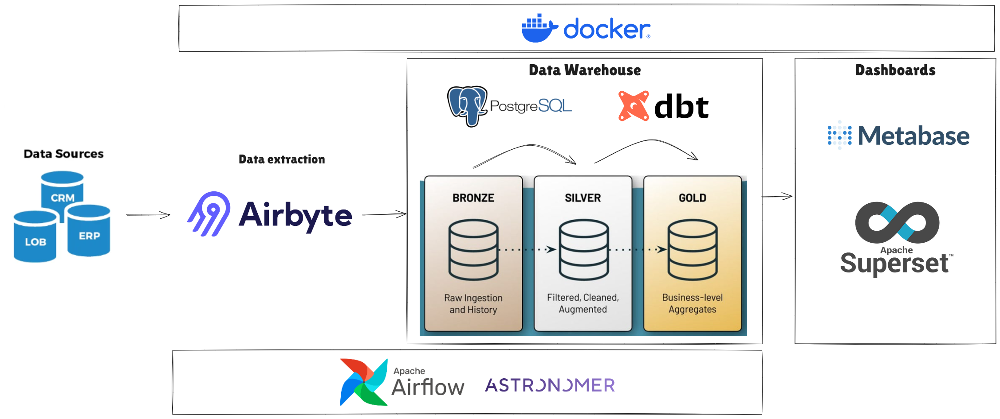

Documentação DW
Bem-vindo à documentação de dados do DW! Este repositório contém informações detalhadas sobre a estrutura e o conteúdo de nossas bases de dados, incluindo tabelas, views, relatórios, colunas, tipos de dados, descrições e etc. A intenção é que seja um lugar onde as informações podem ser buscadas e mapeadas para criação e validação dos relatórios.
Visão Geral

Nosso sistema de DW centraliza dados provenientes de várias fontes e os organiza de maneira a facilitar a análise e a geração de relatórios.
Info
O que é BI (Business Intelligence):
Business Intelligence (BI) é um conjunto de estratégias, processos, tecnologias e ferramentas usadas para coletar, integrar, analisar e apresentar dados empresariais de maneira que facilite a tomada de decisões informadas. O BI transforma grandes volumes de dados brutos em informações valiosas por meio de relatórios, dashboards e visualizações, permitindo que as organizações identifiquem tendências, padrões, e insights que orientam estratégias de negócios e melhoram a eficiência operacional.
Arquitetura do Data Warehouse
A arquitetura do nosso Data Warehouse é composta pelos seguintes componentes:
- Camada de Ingestão e Transformação: Responsável pela extração e carga de dados das fontes para o banco de dados BI.
- Camada de Armazenamento - Data Warehouse: É o destino dos dados onde são carregados, transformados, tornando-os acessiveis as áreas para a gerações de novos relatórios.
- Camada de Apresentação: Onde se encontram os relatórios, dashboards e visualizações disponíveis aos tomadores de decisão.
Data Warehouse
O Data Warehouse é o banco de dados onde os dados são armazenados e organizados de forma a ser utilizados pelos relatórios e dashboards.
Nele encontraremos 2 tipos armazenagem de dados: tabelas e views
Tabelas
As tabelas é onde os dados brutos mapeados armazenados via interfaces de ingestão e transformação.
Explore as tabelas, verifique quais campos já estão mapeados, quais são os filtros aplicados na ingestão e utilize conforme a demanda.
Em caso de campos que não estão mapeados, abra uma solicitação para que possamos avaliar e extrair essas informações das fontes.
Views
Nesta seção, você encontrará exemplos de consultas SQL e relatórios que podem ser gerados a partir dos dados armazenados no Data Warehouse.
Contato
Para mais informações ou dúvidas, entre em contato com a equipe de desenvolvimento.